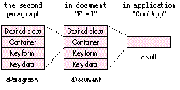

The world of scripting is heating up. More and more developers are getting hip to
scriptability, but they're discovering it's not a simple matter -- implementing
scripting support in an application involves many complex issues. That's where this
column comes in.
My article, "Designing a Scripting Implementation," in the last issue ofdevelop (Issue
21) offered approaches you'll want to consider when designing your scripting
implementation (your object model hierarchy and your human vocabulary), as well as
some basic tips and guidelines for making your application scriptable. This column
picks up where that article left off, elaborating on many of the same issues and
providing further tips, tricks, and standards for scriptability. In this first
installment of the column, I'll clarify a couple of points that some developers found
confusing in the article; then I'll give some new guidelines.
STARTING WITH MENU COMMANDS
In my previous article, I suggested that one place to start your scripting
implementation is to implement your menu commands. Permit me to clarify. Looking
at menu commands is useful because they can suggest functionality that users should be
able to script. But to maintain consistency with other object model-based applications,
you shouldnot implement scripting commands that simply mimic the menu commands.
Resist the temptation to fill up your dictionary with all your menu items, even though
it might be easier to write your event handlers this way. Instead, implement the object
model (discussed at length in "Apple Event Objects and You" in develop Issue 10 and
"Better Apple Event Coding Through Objects" in Issue 12). Keep the number of verbs
small, implement standard verbs wherever applicable, and let the script writer apply
those verbs (especially make, get, and set) to a large number of objects.
LOWERCASING VERBS, TOO
I mentioned in the last issue that you should begin all the terms in your dictionary
(except for proper names) with lowercase letters. This applies not only to object
names but to verbs as well. There are two reasons for this rule. First, AppleScript
allows commands to be embedded within commands (particularly when the embedded
command is from a scripting addition such aschoose file), and these complex
command statements read better when all the verbs are in lowercase. For example:
set myFile to choose file with prompt "Pick it!"
Second, if you were to include an entire suite (such as the Required or Core suite)
from the system dictionary and then add your own verbs starting with uppercase,
you'd end up having a mixture of verbs beginning withuppercase and those beginning
with lowercase displayedin your dictionary, not a pretty picture.
HANDLING REQUESTS TO GET AN OBJECT
Developers are sometimes confused about how to handle a request from an Apple event
or a script to get an object. In the early days, especially when programs were
communicating directly with other programs, developers thought that getting an object
meant returning the internal data structure of the object, such as a WindowRecord or
other C structure. In today's scripting world, you should never return raw internal
data structures. What you should return depends on the object or property requested.
Applications, windows, documents, and interface elements. In most cases,
when the object requested is an application, a window, a document, or an interface
element (such as a button), you should return an error since you can't really bring
these types of objects into your script. For example, get window 1should result in
an error. One exception is that if your application is a script-controlled interface
builder, you might want to return references to the windows, documents, and interface
elements.
You should provide a contents property for objects such as windows and documents.
When this property is requested (as in get the contents of window 1), you should
return the entire contents of the object specified,if appropriate.
Text elements. When the object requested is a text element, such as a word or a
character (as in get word 4 of paragraph 3 of document "Sales"), you should
return the contents of the object itself as a string, such as "Fred" (word) or "x"
(character).
Graphics objects. When the object requested is a simple graphics object where a
standard format is in widespread use, you should return the contents of the object
itself, just as for text elements. For example, for a PICT you would return the
picture's data; for a point or a rectangle you would return a list of integers. When the
object requested is a compound graphics object, such as a grouped graphic, you should
return a reference to the object, in the form of an object specifier.
Cells, fields, and form elements. You should provide a value property for
objects such as cells in a spreadsheet, fields in a database, or elements of a form. (In
essence, this property is the same thing as the contents property, but in natural
language, people usually refer to the value of a cell or field and the contents of a
window. Making a distinction between these two kinds of properties thus preserves a
natural language style.) When this property is requested (for instance,get the value
of cell 3 of row 7), you should provide the content data for the object specified. If
you want script writers to be able to get the value in more than one form, provide the
as parameter (for example,get the value of . . . as styled text).
Rows, records, and entire forms. When a row or column in a spreadsheet or
table, a record in a database, or an entire form is requested, you can return a list of
the data values in each field (for example,get record 43 of database
"Employees"might return {"Fred", 45.00}). However, it might be more appropriate
to return a reference to the object, since the list might be too large or might contain
large data. By the same token, either a list or a reference should be returned when the
current record property that some developers have implemented is requested.
An object's internal data. Rather than dealing with raw internal data structures,
script writers should be able to get any piece of attribute data for an object through
the object's properties, by using the get <property> construct. If you want to let
them get all the attribute data at once with a singleget command, provide a
properties property (as, for example, QuarkXPress does), return a record with the
values for all the properties, and provide a definition for the record as a new abstract
class in the Type Definitions suite (discussed in my article in Issue 21).
As you can see, it's not always clear how to respond to an object request. While not a
hard rule, the basic guideline is this: If an object is an elementary piece of data, such
as a word or a rectangle, return its value directly; if it's a structure, such as a record
or a row, return a list of its values or a reference to the structure; and if it's a
complex or abstract object (especially part of the user interface like a window or a
button), return either an error or a reference to the object. What you decide to return
will often depend on the way you want script sentences to read.
THE APPLICATION AS CONTAINER
How to create and extract object specifiers from Apple events is explained inInside
Macintosh: Interapplication Communication . The outermost container for an object
specifier is always the application itself, represented by a container of type typeNull.
A null container is the only proper way to specify the application level of the
containment; do not include a cApplication object specifier as a container. Figure 1
illustrates the rightway to specify the application as a container. The wrong way in
this case would be to have a third container level labeled cApplication between
cDocument and cNull.
Figure 1.

Specifying the application as a container
I'M OUTTA SPACE
Remember, everything you do in your event handlers, your object accessor functions,
your error messages, and your dictionary will significantly affect the experience your
users have in writing scripts. In future columns, I'll be discussing how to organize
your dictionary; the increasingly crowded naming space for terms; how to organize and
propose a new standard suite, event, or object definition; recording; and, as always,
more tips, tricks, and conventions.
CAL SIMONE (AppleLink MAIN.EVENT) spends a lot of time helping others make
sense of AppleScript, escaping from Washington DC about once a month to promote or
teach AppleScript. He lives in Adams-Morgan, the city's only real ethnic
neighborhood; full of cultural diversity, it boasts 45 restaurants representing 18
different nationalities in just one block.*
Thanks to Sue Dumont and Jon Pugh for reviewing this column. *